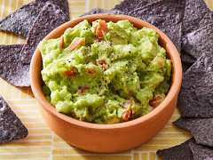

Guacamole
Home

Description
A quick and easy guacamole recipe. It's especially good if you have in season tomatoes. Great with tortilla chips or as a topping for Mexican foods.
Ingredients
- 2 ripe avocados, peeled and pitted
- 1 small onion, finely diced
- 1 ripe tomato, diced
- 1 clove garlic, minced
- 1 lime, juiced
- salt and pepper to taste
Steps
- Gather Ingredients
- Mash avocado in a medium serving bowl.
- Stir in onion, tomato, and garlic.
- Season with lime juice, salt, and pepper to taste.
- Cover and chill for 30 minutes to allow the flavors to blend.